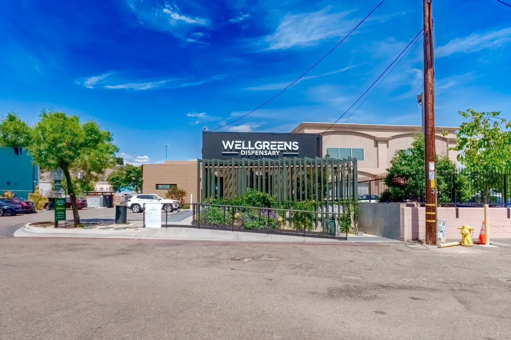
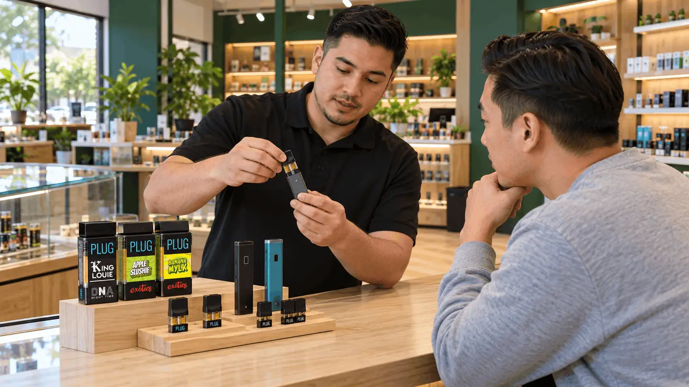

Live Rosin vs Live Resin: Which Concentrate Should You Choose?
November 2, 2026 · 10 min read

Two cannabis concentrates. Similar names. Very different production methods.
If you’ve been comparing live rosin vs live resin, you’ve probably noticed that both products are often associated with fresh-frozen cannabis, aromatic terpene profiles, and premium concentrate collections.
But here’s the catch: live rosin and live resin aren’t interchangeable terms.
The biggest distinction comes down to how they’re made. Live rosin is produced through a solventless extraction process, while live resin typically uses hydrocarbon solvents during manufacturing.
That difference can influence everything from product texture and pricing to the compounds retained in the finished concentrate.
So, which one deserves your attention?
Rather than declaring a universal winner, let’s examine the differences that matter, including extraction methods, cannabinoid content, terpene profiles, product formats, and overall value.
TL;DR: Quick Guide
Here’s a quick comparison of live rosin vs live resin:
- Starting Material: Both live rosin and live resin are typically produced using fresh-frozen cannabis.
- Extraction Method: Live rosin uses solventless techniques involving ice water, heat, and pressure, while live resin commonly uses hydrocarbon solvents.
- Solvent Use: Live rosin is made without conventional chemical extraction solvents, while live resin requires solvent removal during manufacturing.
- THC Potency: Both can contain high THC concentrations, with actual levels varying by product and batch.
- Terpene Profiles: Both may retain aromatic compounds, but neither consistently has more terpenes than the other.
- Texture: Live rosin may have creamy or waxy consistencies, while live resin comes in formats such as sauce, sugar, badder, and wax.
- Pricing: Live rosin often costs more because solventless production can be labor-intensive and produce lower yields.
- Equipment: Product formats vary, and some concentrates require specialized, compatible devices.
- Product Quality: Extraction method alone doesn’t guarantee superior flavor, safety, or overall quality.
Bottom line: Live rosin and live resin can both be highly concentrated cannabis products. The better comparison focuses on verified product information, manufacturing methods, pricing, and personal preferences rather than marketing claims.
Detailed Breakdown

1. What Is Live Rosin?
Live rosin is a cannabis concentrate generally produced from fresh-frozen cannabis using solventless extraction techniques.
Instead of relying on conventional chemical solvents, producers typically separate resin-rich trichomes using ice water and mechanical methods.
The resulting material is then processed using controlled heat and pressure to produce rosin.
The process generally involves:
- Starting with fresh-frozen cannabis.
- Separating trichomes through ice-water agitation.
- Collecting and drying the resulting hash.
- Applying heat and pressure to extract rosin.
- Packaging and storing the finished concentrate under appropriate conditions.
The term solventless refers to the extraction method. It doesn’t mean the product is automatically free of contaminants or without health risks.
Live rosin may be offered in different consistencies depending on its processing and storage.
If you’re curious about the relationship between hash and rosin, Wellgreens’ guide to what is hash rosin provides a deeper explanation.
Key point: Live rosin is defined primarily by its fresh-frozen starting material and solventless production approach.

2. What Is Live Resin?
Live resin is another type of cannabis concentrate commonly made from fresh-frozen cannabis.
Unlike live rosin, however, live resin typically uses solvents such as butane or propane to separate cannabinoids and other compounds from the plant material.
Licensed manufacturers use specialized equipment and controlled processing methods to remove extraction solvents and meet applicable testing requirements.
Live resin may appear in several formats, including:
- Sauce: A concentrate with a fluid, terpene-rich appearance.
- Sugar: A grainy or crystalline-looking consistency.
- Badder: A softer, whipped texture.
- Wax: A general term for certain semi-solid concentrate textures.
- Vape oil: A processed concentrate formulated for compatible vaporizer hardware.
These names describe product characteristics rather than standardized measures of quality.
The extraction method can support different production efficiencies and product consistencies, but the final chemical profile still depends on the starting material and manufacturing process.
Important: Properly manufactured live resin should meet applicable residual-solvent testing standards, but consumers should still review licensed product labeling and testing information.
3. Live Rosin vs Live Resin: How Do Extraction Methods Compare?
Extraction is the defining difference in the live rosin vs live resin debate.
Both categories generally begin with fresh-frozen cannabis, but they use different methods to separate and concentrate desirable plant compounds.
Live rosin extraction relies on mechanical separation, typically involving water, ice, heat, and pressure.
Live resin extraction commonly uses chemical solvents in specialized equipment, followed by processing to remove those solvents.
Here’s why that matters:
- Extraction methods can influence yield.
- Different processes may retain different proportions of cannabinoids and terpenes.
- Manufacturing requirements and equipment differ.
- Production costs can vary significantly.
- The final product’s consistency may depend on additional processing steps.
Neither method should be attempted casually at home, particularly hydrocarbon extraction, which involves serious fire and explosion hazards.
And neither method guarantees a superior finished product.
A well-manufactured live resin may have a more appealing tested profile than a poorly produced live rosin, or vice versa.
The product’s actual quality matters more than its category label.

4. Which Has More THC: Live Rosin or Live Resin?
One of the most common questions about live rosin vs live resin is which product is stronger.
The answer isn’t as straightforward as the names might suggest.
Both live rosin and live resin can contain high concentrations of THC, but the actual percentage depends on several factors:
- Cannabis genetics.
- Starting material quality.
- Extraction and processing methods.
- Cannabinoid composition.
- Batch-specific variation.
- Final product formulation.
Some live resin products may test higher in THC than certain live rosin products, while others may show the opposite.
Higher THC concentration also doesn’t automatically mean better quality.
Concentrated cannabis products can increase the risk of unpleasant effects, including anxiety, dizziness, and impairment, especially among people with limited cannabis experience.
The smarter comparison: Review the laboratory-tested cannabinoid information on the specific products rather than assuming one concentrate category is always stronger.
5. How Do Terpenes and Aroma Compare?
Terpenes are aromatic compounds found in cannabis and many other plants.
They contribute to recognizable scent characteristics such as citrus, pine, floral, herbal, and earthy notes.
Both live rosin and live resin are often marketed for their terpene content because fresh-frozen processing can help preserve compounds that may change during conventional drying and curing.
However, terpene preservation isn’t guaranteed.
Several factors influence the final profile:
- The original cannabis cultivar.
- Harvest and freezing practices.
- Extraction conditions.
- Exposure to heat and oxygen.
- Storage temperatures.
- Packaging quality.
Live rosin may appeal to consumers interested in solventless processing, while live resin can offer a wide variety of aromatic profiles and product consistencies.
But there is no universal rule that one category always tastes or smells better.
Also, terpene profiles should not be treated as reliable predictions of specific medical benefits or psychological effects.
Remember: Aroma is subjective, and laboratory results are more informative than marketing descriptions alone.

6. Compare Product Formats and Equipment Requirements
Live rosin and live resin are available in different product formats, and those formats affect equipment compatibility.
Some concentrates are packaged for use with specialized concentrate devices, while others are incorporated into vape cartridges.
Not every concentrate can be used with every vaporizer.
When reviewing a product, check:
- Whether it is a standalone concentrate or a formulated vape cartridge.
- The manufacturer’s equipment compatibility instructions.
- The net weight or volume.
- Cannabinoid and terpene labeling.
- Storage requirements.
- Product-specific safety information.
For readers exploring cartridge options, Wellgreens’ guide to live resin carts vs distillate carts explains another important distinction in cannabis vape products.
Remember that inhaling cannabis smoke or aerosol carries health risks, regardless of the concentrate type.
Avoid modifying devices or using equipment outside its intended specifications.
7. What Can Jetty Extracts Tell You About Concentrate Options?
Looking at established cannabis brands can help make concentrate terminology easier to understand.
Jetty Extracts is a cannabis brand associated with extraction-focused product offerings.
When researching products from Jetty or similar manufacturers, useful questions include:
- Is the product labeled live rosin, live resin, distillate, or another extract type?
- What extraction method does the manufacturer describe?
- What cannabinoids are reported on the package?
- Does the label include terpene information?
- Is the product designed for a particular device?
- What batch testing information is available?
Wellgreens’ Jetty Extracts vape guide provides additional background on the brand’s vape category.
Don’t assume that every product from a concentrate-focused brand uses the same extraction process.
Always check the exact product listing.

8. How Do Raw Garden and 710 Labs Fit Into the Comparison?
Different cannabis brands emphasize different product lines, production techniques, and formats.
For example, Raw Garden products include offerings associated with cannabis extracts and vape products.
Wellgreens also has a dedicated guide to Raw Garden live resin carts, which provides a useful example of the live resin cartridge category.
Meanwhile, 710 Labs products offer another reference point for consumers researching premium cannabis concentrate formats, including solventless products.
When comparing brands, avoid relying on reputation alone.
Instead, evaluate:
- The specific extract category.
- Batch-tested cannabinoid content.
- Terpene information, when available.
- Package size.
- Product freshness and storage requirements.
- Current retail pricing.
- Manufacturer instructions.
A brand may offer multiple concentrate formats, and availability can change.
The most useful comparison is always between actual products, not broad assumptions about brand names.
9. Live Rosin vs Live Resin: Which Offers Better Value?
Price is another major factor in the live rosin vs live resin comparison.
Live rosin often carries a higher retail price because solventless production can involve more labor-intensive processing and lower yields.
Live resin may be available across a wider range of price points, although premium live resin products can also be expensive.
To compare value, consider:
FactorWhy It MattersPrice per packageShows the immediate purchase costNet weightHelps compare differently sized productsTested cannabinoid contentProvides batch-specific composition informationTerpene profileDescribes aromatic compounds presentExtraction methodIdentifies how the concentrate was producedEquipment needsMay affect the total cost of using the productStorage requirementsCan affect product handling and quality over time
Higher prices don’t guarantee better products, just as lower prices don’t automatically indicate poor quality.
If solventless processing is an important personal preference, live rosin may be the category you want to research more closely.
If you’re comparing a broader range of extract consistencies and price points, live resin may provide more options to evaluate.
Neither category is universally the better purchase.

10. Where to Find Reliable Concentrate Product Information
When comparing live rosin and live resin, accurate product information matters more than exaggerated claims about potency or flavor.
Start with the manufacturer’s description and the product’s tested label.
Wellgreens provides cannabis product information and retail options for eligible adult customers in the San Diego area.
Before evaluating any concentrate, confirm:
- The full product name.
- Whether it is live rosin or live resin.
- Net weight.
- Cannabinoid content.
- Available terpene details.
- Testing and batch information.
- Current pricing and availability.
California adult-use cannabis purchases are generally restricted to adults aged 21 and older, with separate eligibility rules for qualifying medical cannabis patients.
Consumers should also understand that cannabis concentrates can contain substantial THC concentrations and are not risk-free.
Key Takeaways
The live rosin vs live resin comparison comes down to extraction methods, product characteristics, and individual priorities.
- Live rosin is solventless: It is typically made from fresh-frozen cannabis using mechanical separation, heat, and pressure.
- Live resin uses solvents: It is commonly produced through hydrocarbon extraction followed by controlled processing.
- Both can contain high THC levels: Actual potency depends on the specific product and batch.
- Terpene profiles vary: Neither method automatically guarantees superior aroma or flavor.
- Product formats differ: Concentrates and cartridges may require different compatible equipment.
- Brand offerings aren’t identical: Always review the specific product rather than assuming every extract uses the same method.
- Live rosin often costs more: Production complexity and yield can influence retail pricing.
- Testing matters: Accurate cannabinoid labeling, batch details, and compliance information are more useful than hype.
- Neither is risk-free: High-THC concentrates and inhaled cannabis products carry potential health risks.
Ultimately, the better question isn’t simply, “Which concentrate is best?”
It’s, “Which product has the characteristics, verified information, and format I’m actually looking for?”
FAQs
01What is the biggest difference between live rosin and live resin?
Live rosin is typically produced using solventless techniques involving ice water, heat, and pressure. Live resin generally uses hydrocarbon solvents during extraction, followed by processing to remove them. Both categories commonly begin with fresh-frozen cannabis, but their manufacturing methods differ.
02Is live rosin stronger than live resin?
Not necessarily, because THC concentration varies by product and batch. Some live resin products may test higher than certain live rosin products, while others may test lower. Review laboratory-tested cannabinoid labels rather than assuming one category is always more potent.
03Why is live rosin often more expensive than live resin?
Live rosin production can require labor-intensive processing and may produce lower yields. These factors can contribute to higher manufacturing and retail costs. However, actual pricing depends on the brand, product quality, package size, and retailer.
04Does live rosin have more terpenes than live resin?
Neither concentrate type consistently contains more terpenes across all products. Terpene levels depend on the starting material, extraction process, storage, and individual batch. Check available laboratory information for the most accurate comparison.
05Which is better for beginners, live rosin or live resin?
Neither category is automatically suitable for beginners because both can contain high concentrations of THC. Higher-potency cannabis products may increase the likelihood of adverse effects, particularly for people with limited experience. Anyone with health concerns should consult a qualified healthcare professional and avoid assuming that a premium product is inherently safer.
Shop this guide
Keep reading

Why Is Your Cake Disposable Vape Not Hitting and What Should You Check?
You pick up your Cake disposable vape, take a draw, and… nothing. No vapor, no response, just a device that seems to have called it quits…

Cannabiotix Flower vs Concentrates: Which Product Type Fits Your Needs?
If you’re comparing Cannabiotix flower vs concentrates, you’ve probably noticed that both categories offer distinct characteristics, from…

Why Is Your PlugPlay Battery Not Working and What Should You Check?
You connect your PlugPlay pod, expect your vape to respond, and get absolutely nothing. No vapor, no normal indicator…
Ready to Start?
Premium cannabis. Expert guidance. Fast pickup. Join thousands of San Diegans who trust Wellgreens.